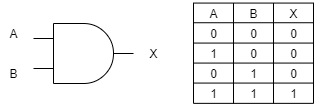
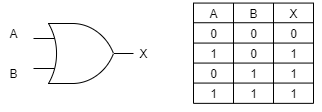
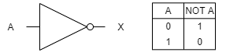
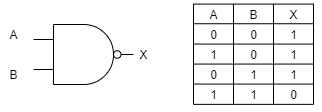
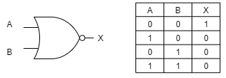
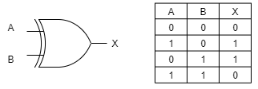
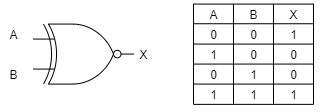

Pengertian Gerbang Logika
Gerbang logika adalah penyusun elektronika digital yang setiap cara kerja rangkaian pada gerbang logika menggunakan prinsip aljabar Boolean. Pada dasarnya dalam ilmu elektronik, suatu masukan dan keluaran dibangun oleh yang namanya voltase atau arus. Voltase ini biasanya dihubungkan dengan sakelar. Oleh karena itu, gerbang logika bisa dikatakan sebagai bermacam-macam sakelar yang mengimplementasikan aljabar Boolean pada sistem elektronik. Dengan adanya sakelar, maka barang-barang elektronik tertentu bisa digunakan dengan semestinya. Hal ini dikarenakan operasi logis pada satu atau lebih masukan logis akan menghasilkan keluaran logika soliter.
Perangkat komputer yang pertama ternyata dikembangkan untuk desain pesawat dan peluru kendali. Komputer generasi pertama ini digagas oleh Konrad Zuse, seorang insinyur asal jerman. Komputer ini menggunakan tabung hampa udara sebagai sirkuit dan drum magnetik untuk memori. Elektronika digital juga dikenal sebagai sebutan lain yaitu rangkaian digital. Penyusun dari rangkaian digital disebut dengan gerbang logika. Sama dengan namanya, maka gerbang logika menjalankan operasi logika. Biasanya gerbang logika menjalankan operasi logika pada satu atau lebih masukan serta menghasilkan keluaran yang tunggal. Gerbang logika adalah penyusun elektronika digital yang setiap cara kerja rangkaian pada gerbang logika menggunakan prinsip aljabar Boolean. Pada dasarnya dalam ilmu elektronik, suatu masukan dan keluaran dibangun oleh yang namanya voltase atau arus. Voltase ini biasanya dihubungkan dengan sakelar. Oleh karena itu, gerbang logika bisa dikatakan sebagai bermacam-macam sakelar yang mengimplementasikan aljabar Boolean pada sistem elektronik. Dengan adanya sakelar, maka barang-barang elektronik tertentu bisa digunakan dengan semestinya. Hal ini dikarenakan operasi logis pada satu atau lebih masukan logis akan menghasilkan keluaran logika soliter.Jenis Gerbang Logika
Gerbang AND
Jenis pertama adalah gerbang AND. Gerbang AND ini memerlukan dua atau lebih input untuk menghasilkan satu output. Jika semua atau salah satu inputnya merupakan bilangan biner 0, maka outputnya akan menjadi 0. Sedangkan jika semua input adalah bilangan biner 1, maka outputnya akan menjadi 1.
Gerbang OR
Jenis kedua adalah gerbang OR. Sama seperti gerbang sebelumnya, gerbang ini juga memerlukan dua input untuk menghasilkan satu output. Gerbang OR ini akan menghasilkan output 1 jika semua atau salah satu input merupakan bilangan biner 1. Sedangkan output akan menghasilkan 0 jika semua inputnya adalah bilangan biner 0.
Gerbang NOT
Jenis berikutnya adalah gerbang NOT. Gerbang NOT ini berfungsi sebagai pembalik keadaan. Jika input bernilai 1 maka outputnya akan bernilai 0 dan begitu juga sebaliknya
Kemudian, pada tahun 1958, Jack Billy menciptakan integrated circuit chip atau IC. IC ini merupakan kepingan kecil yang mampu menampung banyak komponen menjadi satu. Jadi, komputer pada generasi ketiga menjadi lebih kecil, cepat, dan murah. Pada masa ini, memungkinkan juga untuk dipasarkan ke khalayak umum.
Gerbang NAND
Selanjutnya adalah gerbang NAND. Gerbang NAND ini adalah gabungan dari gerbang AND dan gerbang NOT. Karena itu output yang dihasilkan dari gerbang NAND ini adalah kebalikan dari gerbang AND.
Gerbang NOR
Berikutnya adalah gerbang NOR. Gerbang NOR ini adalah gabungan dari gerbang OR dan gerbang NOT. Sehingga output yang dihasilkan dari gerbang NOR ini adalah kebalikan dari gerbang OR.
Gerbang XOR
Jenis berikutnya adalah gerbang XOR. Gerbang XOR ini memerlukan dua input untuk menghasilkan satu output. Jika input berbeda (misalkan: input A=1, input B=0) maka output yang dihasilkan adalah bilangan biner 1. Sedangkan jika input adalah sama maka akan menghasilkan output dengan bilangan biner 0.
Gerbang XNOR
Jenis yang terakhir adalah gerbang XNOR. Gerbang XNOR ini memerlukan dua input untuk menghasilkan satu output. Jika input berbeda (misalkan: input A=1, input B=0) maka output yang dihasilkan adalah bilangan biner 0. Sedangkan jika input adalah sama maka akan menghasilkan output dengan bilangan biner 1.
